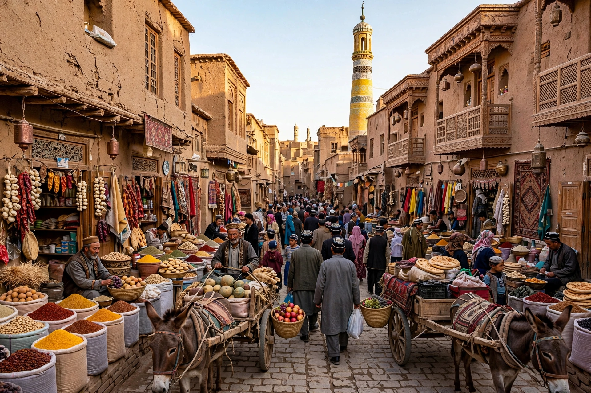

[Image placeholder: The old city of Kashgar, historic Silk Road crossroads]| Country | China |
|---|---|
| Status | Xinjiang Uyghur Autonomous Region |
| Capital | Ürümqi |
| Area | About 1.66 million km² — China's largest provincial-level division |
| Population | About 26 million |
| Geography | Taklamakan Desert and Tarim Basin south; Dzungarian Basin north; Tian Shan between |
**Xinjiang**, officially the Xinjiang Uyghur Autonomous Region, is an autonomous region of China in the northwest of the country, bordering eight countries including Mongolia, Russia, Kazakhstan, Pakistan and Afghanistan (via the Wakhan Corridor). It is China's largest administrative division — a sixth of its land area — yet holds under 2% of its population, concentrated in oasis cities around the Taklamakan Desert and the northern plains.
Xinjiang was the crossroads of the Silk Road: the southern oases (Kashgar, Turpan, Khotan) and northern routes carried goods, religions (Buddhism, Islam, Manichaeism) and peoples between China and Central Asia. The region's population is roughly half Uyghur (a Turkic, mostly Muslim people) and a large Han Chinese minority that grew through state-sponsored migration since 1949.
Since 2017, credible reports by the UN and many governments have described mass detention of Uyghurs and other Muslims in camps, pervasive surveillance, forced labour and birth suppression; the UN human rights office found in 2022 that the abuses may constitute crimes against humanity. China denies the charges, describing facilities as vocational training centres and its policies as counter-terrorism and development. The issue drives sanctions and trade disputes (such as the US Uyghur Forced Labor Prevention Act).
Xinjiang produces most of China's cotton, much of its tomatoes and hops, oil and gas from the Tarim fields, and wind and solar power; the China–Pakistan Economic Corridor runs through Kashgar. The Turpan Depression, 154 m below sea level, is China's lowest and hottest place.